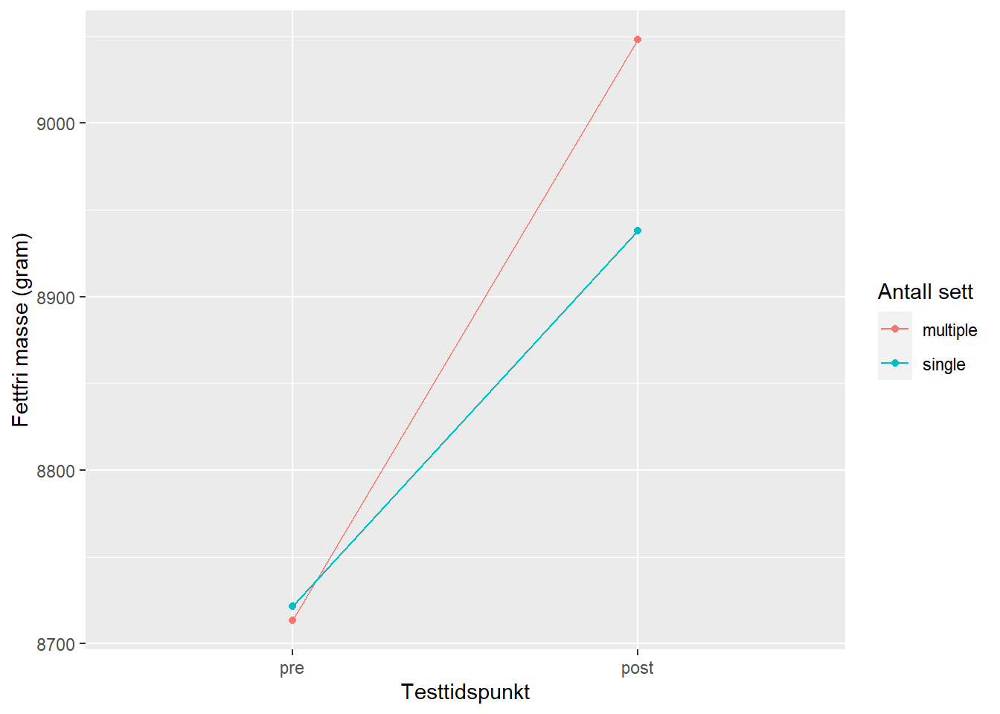
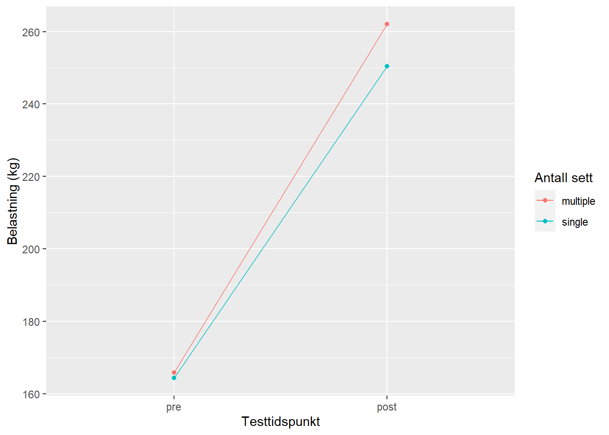

| Variable | N | Avg | SD |
|---|---|---|---|
| age | 34 | 22.8 | (3) |
| height | 34 | 174.8 | (10) |
| weight | 34 | 69.7 | (11.9) |
| Avg = Gjennomsnitt, SD = Standardavvik | |||
Effects of different trainingvolume on strength and hypertrophy
Introduksjon
Styrketrening påvirker kroppen og gir adaptasjoner som for eksempel økt muskelstyrke og økt muskelmasse som kan påvirke både prestasjon- og helseparametere. Det er vanlig å skille mellom morfologiske og nevrologiske adaptasjoner til styrketrening (Folland & Williams, 2007). Økning i muskelens tverrsnittsareal er et eksempel på en morfologisk adaptasjon som er et resultat av at myofibrillene øker i størrelse og antall. Andre morforlogiske adaptasjoner er endring i fibertypesammensetning og hyperplasi (Folland & Williams, 2007; Raastad et al., 2010). Nevrologiske adaptasjoner innebærer blandt annet bedre rekruttering av muskulatur, bedre teknikk og koordinasjon (Folland & Williams, 2007).
Det er flere faktorer som påvirker adaptasjoner til styrketrening. Hvor stor fremgang en kan forvente påvirkes blandt annet av treningserfaring. Personer med lav treningserfaring kan forvente en større prosentvis fremgang per økt i både styrke og muskelmasse enn godt trente individer (Hughes, Ellefsen & Baar, 2018). Et utrent individ kan oppleve en økning på mellom ukentlig økning i maksimal muskelstyrke på 1 % (McDonagh & Davies, 1984) og en økning på mellom 0,1 og 0,5% i muskelmasse per økt (Wernbom et al., 2007). En annen faktor som påvirker adaptasjoner til trening er treningsvolum. Treningsvolumet er en indikator på hvor mye arbeid en gitt muskel utfører under en treningsøkt. Ofte regner man treningsvolumet som produktet av antall serier * antall repetisjoner * treningsmotstand (Raastad et al., 2010). Mye forskning tyder på at et høyere volum gir bedre adaptasjoner til styrketrening (Krieger et al. 2009). Allikevel fant Cannon & Marino 2010 og Mitchell et al., 2012 ut at lavt treningsvolum ga samme adaptasjoner som moderat treningsvolum. Andre faktorer som påvirker styrketreningsadaptasjoner er søvn, kosthold, alder og kjønn (Hughes, Ellefsen & Baar, 2018).
Mangel på tid er ofte en faktor som hindrer folk i å trene (Choi et al., 2017). For mennesker med et høyt tempo i hverdagen kan det derfor være av interesse å vite hvor lite trening en kan gjøre og fortsatt få de positive effektene trening bringer. Denne oppgaven har til formål og undersøke hvordan lavt treningsvolum og moderat treningsvolum påvirker 1RM kneekstensjon og muskelmasse.
Metode
Deltakere
41 deltakere ble rekrutert til studien, kriteriet for inklusjon var både menn og kvinner mellom 18 og 40 år som ikke røyket. Individer med intoleranse for lokalbedøvelse, treningshistorie med mere enn én ukentlig styrketreningsøkt de siste tolv måneder før intervensjon, nedsatt styrke på grunn av tidligere eller nåverende skade, inntak av medikamenter som kunne påvirke treningsadaptasjoner ble ekskludert fra studien. Av de 41 deltakerne som ble rekrutert til studien ble syv ekskludert fra dataanalysene fordi de ikke fullførte minst 85% av de planlagte treningsøktene av ulike grunner: ubehag eller smerter i underekstrimiteter under trening (n=5), skade som ikke var relatert til studien (n=1), ikke overholdt studieprotokoll (n=1). Alle inkluderte deltakere rapporterte tidligere erfaring med idrettsaktiviteter (for eksempel lagsport, langrenn eller gymnastikk). Tjue deltakere rapporterte at de drev med fysisk trening ved studiets oppstart, hvorav ti drev med sporadisk styrketrening, men ikke mere enn én økt i uken. Detaljert informasjon om deltakerne finnes i Table 1.
Intervensjon
Intervensjonen gikk over tolv uker. Deltakerene gjennomførte et fullkropp-styrkeprogram med en frekvens på 2-3 økter i uken. Det ble gjennomført en standardisert oppvarmingsprotokoll før hver styrkeøkt bestående av fem minutter på ergometersykkel (RPE 12-14), etterfulgt av ti repetisjoner av følgende kroppsvektøvelser: push-ups med individuellt justert vinkel, sit-ups, ryggeksensjon og knebøy. I tillegg ble det gjennomført ett sett med ti repetisjoner på 50% av 1RM for hver av øvelsene i styrketreningsprogrammet. I styrketreningsprogrammet ble øvelsene på underekstremitet gjennomført unilateralt slik at hver deltaker kunne ha lavt treningsvolum på ett bein og moderat på det andre beinet. Hvilket bein som ble tildelt lavt treningsvolum og hvilket som ble tildelt moderat hos hver deltaker var tilfeldig. Øvelsene i styrkeprogrammet ble gjennomført i følgende rekkefølge: unilateral benpress, lår curl og kneekstensjon. Det beinet som kun skulle ha ett sett ble trent mellom sett to og tre på beinet som gjennomførte tre sett. Etter beinøvelsene ble det gjennomført to sett bilateral benkpress, nedtrekk og enten skulderpress (en av øvelsene annenhver økt). Deltakerne hadde 90-180 sek pause mellom hvert sett. Den relative motstanden økte underveis i intervensjonen, det ble brukt 10RM de første to ukene, etterfulgt av 8RM i tre uker før sju uker på 7RM. Av hensyn til deltakerenes hverdag ble noen av treningsøktene ble gjennomført uten tilsyn. I gjennomsnitt ble 91% av øktene gjennomført med tilsyn (SD=10, range: 67-100%). Deltakerene måtte føre detaljerte logger som jevnlig ble sjekket av forskningsgruppa for å forsikre progresjon og at protokollen ble fulgt. Etter den niende treningsøkten hadde hver uke med tre treningsøkter en økt med redusert motstand, tilsvarende 90% av forgje økt med samme antall repetisjoner. Økter med maksimal innsats var adskillt med 48 timer, mens økter med submaksimal innsats var adskillt fra andre økter med minst 24 timer. For å sikre god restitusjon fikk deltakerene en standardisert drikke som inneholdt 0.15 g protein, 1.2 g karbohydrat og 0.5 g fett per kilo kroppsvekt etter hver økt.
Muskelstyrke
I denne oppgaven blir en repetisjon maksimum (1RM) i beinpress brukt som mål på maksimal styrke. I forkant av 1RM testen ble det gjennomført en standardisert oppvarming bestående av 10, 6 og 3 repetisjoner på hhv 50, 75 og 85% av antatt 1RM. Deretter fikk deltakerene fire til seks førsøk på å gjennomføre én repetisjon med progressivt økende belastning til de ikke klarte å løfte vekten gjennom hele bevegelsesbanen. Den tyngste repetisjonen med fullt bevegelsesutslag ble definert som 1RM.
Muskelmasse
Andel fettfri masse ble målt før og etter intervensjonen ved bruk av dual-energy X-ray absorptiometry (DXA) (Lunar Prodigy, GE Healthcare, Oslo, Norge), i henhold til standard protokoll. Deltakerene ble bedt om å faste to timer og holde seg unna anstrengende fysisk aktivitet i 48 timer i forkant av DXA. Det var to dagers opphold mellom siste styrketreningsøkt og DXA.
Statistisk analyse
Dataene ble behandlet i R-studio. Det ble benyttet paired sample t-test til å måle effekten lavt og moderat treningsvolum har på fettfri masse og 1RM benpress. Signifikansnivået ble satt til p > 0,05. Dataene i oppgaven er pressentert som gjennomsnitt +- standardavvik hvis ikke annet er oppgitt.
Resultat
Beinet som trente tre sett hadde en større økning i fettfri masse enn beinet som trente ett sett. Forskjellen var 122.8, 95% CI: [8.6, 237], p = 0.036. Figure 1 viser hvor mye de økte i fettfri masse fra pre- til posttest. I 1RM benpress var det en gjennomsnittlig differanse på 7.8, 95% CI: [1.1, 14.6], p = 0.025. Figure 2 viser hvor stor økning deltakerne hadde i 1RM benpress fra pre- til posttest.


Diskusjon
Resultatene viser at det var en signifikant forskjell i økning i fettfri masse og 1 RM benpress mellom gruppen som gjennomførte tre sett og ett sett. At gruppen som trente tre sett hadde større fremgang en gruppen som kun trente ett sett stemmer overens med antakelsen om at det er et dose-responsforhold mellom styrketreningsvolum og treningsadaptasjoner (Schoenfeld et al., 2017).
Det er viktig å påpeke at selv om deltakerne hadde størst fremgang i det beinet som trente tre sett så hadde deltakerne stor fremgang i både styrke og fettfri masse i begge ben. Styrketreningsprotokollen hadde to øvelser som teller 100% volum på forside lår med en frekvens på 2-3 økter per uke. Det vil si at det ukentlige antall sett var på 4-6 sett for det beinet som kun trente ett sett per øvelse. Androulakis-Korakakis et al. 2020 fant ut at kun ett enkelt sett med 6-12 repetisjoner med stor innsats 2-3 ganger i uken ga suboptimale, men signifikante økninger i 1RM hos godt styrketrente individer. Det kan altså tyde på at et lavt treningsvolum kan gi gode styrketreningsadaptasjoner. Denne informasjonen kan være av nytte for personer som har lite tid til styrketrening i hverdagen.
Konklusjon
Ett lavt styrketreningsvolum gir gode adaptasjoner. Ett moderat volum gir bedre adaptasjoner enn lavt volum.
Litteraturliste
Androulakis-Korakakis, P., Fisher, J. P., & Steele, J. (2020). The Minimum Effective Training Dose Required to Increase 1RM Strength in Resistance-Trained Men: A Systematic Review and Meta-Analysis. Sports medicine (Auckland, N.Z.), 50(4), 751–765. https://doi.org/10.1007/s40279-019-01236-0
Cannon, J., & Marino, F. E. (2010). Early-phase neuromuscular adaptations to high- and low-volume resistance training in untrained young and older women. Journal of sports sciences, 28(14), 1505–1514. https://doi.org/10.1080/02640414.2010.517544
Choi, J., Lee, M., Lee, J. K., Kang, D., & Choi, J. Y. (2017). Correlates associated with participation in physical activity among adults: a systematic review of reviews and update. BMC public health, 17(1), 356. https://doi.org/10.1186/s12889-017-4255-2
Hughes, D. C., Ellefsen, S., & Baar, K. (2018). Adaptations to Endurance and Strength Training. Cold Spring Harbor perspectives in medicine, 8(6), a029769. https://doi.org/10.1101/cshperspect.a029769
Krieger J. W. (2009). Single versus multiple sets of resistance exercise: a meta-regression. Journal of strength and conditioning research, 23(6), 1890–1901. https://doi.org/10.1519/JSC.0b013e3181b370be
McDonagh, M.J.N., Davies, C.T.M. Adaptive response of mammalian skeletal muscle to exercise with high loads. Europ. J. Appl. Physiol. 52, 139–155 (1984). https://doi.org/10.1007/BF00433384
Mitchell, C. J., Churchward-Venne, T. A., West, D. W., Burd, N. A., Breen, L., Baker, S. K., & Phillips, S. M. (2012). Resistance exercise load does not determine training-mediated hypertrophic gains in young men. Journal of applied physiology (Bethesda, Md. : 1985), 113(1), 71–77. https://doi.org/10.1152/japplphysiol.00307.2012
Folland, J. P., & Williams, A. G. (2007). The adaptations to strength training: morphological and neurological contributions to increased strength. Sports medicine (Auckland, N.Z.), 37(2), 145–168. https://doi.org/10.2165/00007256-200737020-00004
Raastad, T., Paulsen, G., Refsnes, P. E., Rønnestad, B. R.& Wisnes, A. R. (2010). Styrketrening- i teori og praksis. Gyldendal Norsk forlag AS
Schoenfeld, B. J., Ogborn, D., & Krieger, J. W. (2017). Dose-response relationship between weekly resistance training volume and increases in muscle mass: A systematic review and meta-analysis. Journal of sports sciences, 35(11), 1073–1082. https://doi.org/10.1080/02640414.2016.1210197
Wernbom, M., Augustsson, J., & Thomeé, R. (2007). The influence of frequency, intensity, volume and mode of strength training on whole muscle cross-sectional area in humans. Sports medicine (Auckland, N.Z.), 37(3), 225–264. https://doi.org/10.2165/00007256-200737030-00004